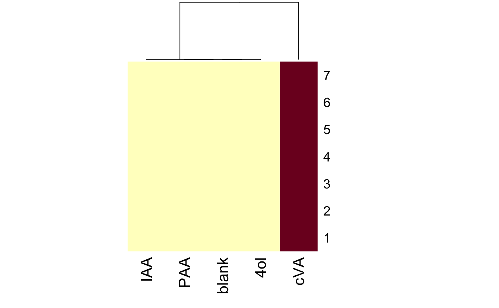

Each element of the list corresponds to a single neuron and contains an m x n
numeric matrix of spike counts for m trials in response to n odours. The
basic data block is defined by OdourResponseFromSpikes
#> blank cVA 4ol PAA IAA pro #> Min. :0 Min. :24 Min. :0 Min. :0 Min. :0 Min. :0 #> 1st Qu.:0 1st Qu.:26 1st Qu.:0 1st Qu.:0 1st Qu.:0 1st Qu.:0 #> Median :0 Median :30 Median :0 Median :0 Median :0 Median :0 #> Mean :0 Mean :28 Mean :0 Mean :0 Mean :0 Mean :0 #> 3rd Qu.:0 3rd Qu.:30 3rd Qu.:0 3rd Qu.:0 3rd Qu.:0 3rd Qu.:0 #> Max. :0 Max. :30 Max. :0 Max. :0 Max. :0 Max. :0 #> NA's :4 #> far vin pac aac ger #> Min. : NA Min. : NA Min. : NA Min. : NA Min. :0 #> 1st Qu.: NA 1st Qu.: NA 1st Qu.: NA 1st Qu.: NA 1st Qu.:0 #> Median : NA Median : NA Median : NA Median : NA Median :0 #> Mean :NaN Mean :NaN Mean :NaN Mean :NaN Mean :0 #> 3rd Qu.: NA 3rd Qu.: NA 3rd Qu.: NA 3rd Qu.: NA 3rd Qu.:0 #> Max. : NA Max. : NA Max. : NA Max. : NA Max. :0 #> NA's :7 NA's :7 NA's :7 NA's :7 NA's :4 #> lin bty hxe ben met pra #> Min. :0 Min. :0 Min. :0 Min. :0 Min. :0 Min. :0 #> 1st Qu.:0 1st Qu.:0 1st Qu.:0 1st Qu.:0 1st Qu.:0 1st Qu.:0 #> Median :0 Median :0 Median :0 Median :0 Median :0 Median :0 #> Mean :0 Mean :0 Mean :0 Mean :0 Mean :0 Mean :0 #> 3rd Qu.:0 3rd Qu.:0 3rd Qu.:0 3rd Qu.:0 3rd Qu.:0 3rd Qu.:0 #> Max. :0 Max. :0 Max. :0 Max. :0 Max. :0 Max. :0 #> NA's :4 NA's :4 NA's :4 NA's :4 NA's :4 NA's :4 #> hxa ehb eta cit #> Min. :0 Min. :0 Min. :0 Min. :0 #> 1st Qu.:0 1st Qu.:0 1st Qu.:0 1st Qu.:0 #> Median :0 Median :0 Median :0 Median :0 #> Mean :0 Mean :0 Mean :0 Mean :0 #> 3rd Qu.:0 3rd Qu.:0 3rd Qu.:0 3rd Qu.:0 #> Max. :0 Max. :0 Max. :0 Max. :0 #> NA's :4 NA's :4 NA's :4 NA's :4#> [1] 7#> blank cVA 4ol PAA IAA pro far vin pac aac ger lin bty #> 7 7 7 7 7 3 0 0 0 0 3 3 3 #> hxe ben met pra hxa ehb eta cit #> 3 3 3 3 3 3 3 3